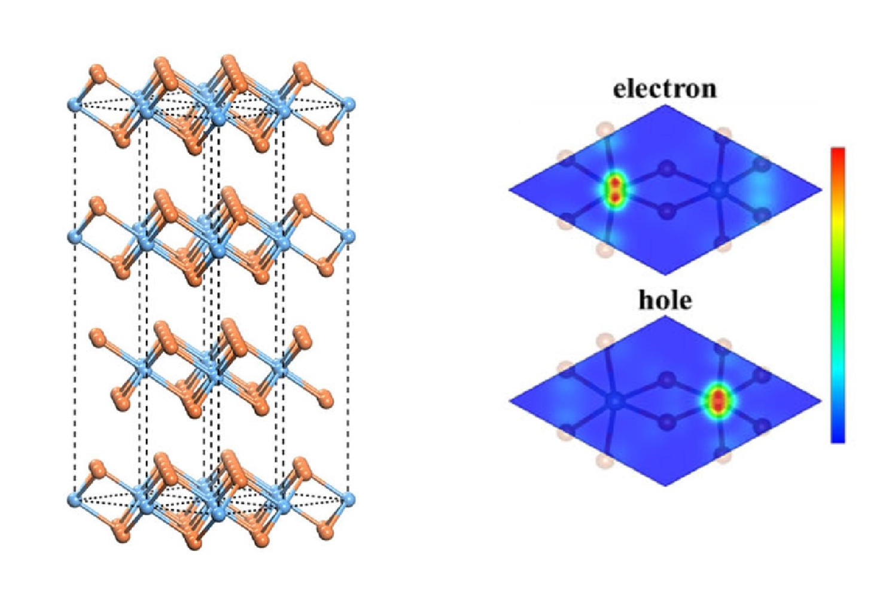

多铁材料的应用
多铁材料在各个领域都有着及其重大的应用前景，尤其是在信息存储领域。利用多铁材料铁电铁磁耦合的性质可以制作“磁读电写”存储器，实现高可靠性、低能耗、高速度存储。
多态存储器
多铁材料同时拥有铁磁性与铁电性两种性质，用这两种性质的四种组合可以存储数据，存储密度比传统的磁存储存储密度有着巨大的提高。 与传统的磁存储与电存储相比具有两种铁性质的多铁材料无疑在信息存储技术方面会占有巨大的优势。通过外加电磁场的调控，可以实现四种阻值的状态，通过合适的工业技术手段，可以实现对存储效率的倍增。
低能耗逻辑存储器
目前寻求更高效的低能耗存储器是计算机技术的一个重要的发展方向。现在的发展趋势是将自旋霍尔效应与多铁材料的电场调控磁性相结合，制成多铁性的包含强自旋轨道耦合的逻辑存储器。通过自旋霍尔效应可以将自旋转化为电荷或者电场，而多铁性的铁电铁磁耦合可以利用电场调控磁性或自旋，如果这样的存储器可以研制成功，器件整体工作电压将从5V左右降低到100mV，反转或存储一比特信息所需要的能量将有希望降低到1aJ。就目前来说，在众多发现的材料之中，最古老的多铁材料 希望最大。
高频射频器件
高频射频器件也是多铁材料的重要应用方向之一。高频射频器件在无线通信、国防军事等方面有着重大应用价值，就目前研究来看，此方向应用最多的是基于机械耦合的多铁材料。
磁电探测器
多铁性材料最直接的应用之一就是磁电传感器，多铁材料内部铁电性与铁磁性相耦合的性质可以很容易地实现电信号与磁信号的相互转化。相对于传统的磁电传感器，基于多铁材料电磁耦合效应的磁电探测器在工作时不需要消耗能量，可以做成无源器件，对简化电子电路有很大价值。

层状溴化铬结构与溴化铬掺杂电子或空穴后的电子密度分布变化。